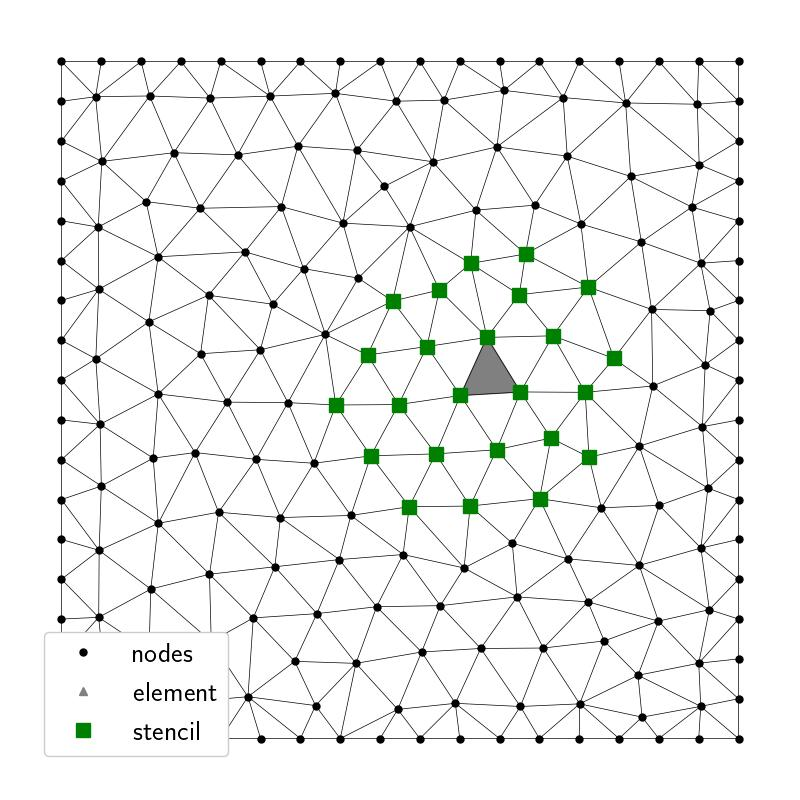
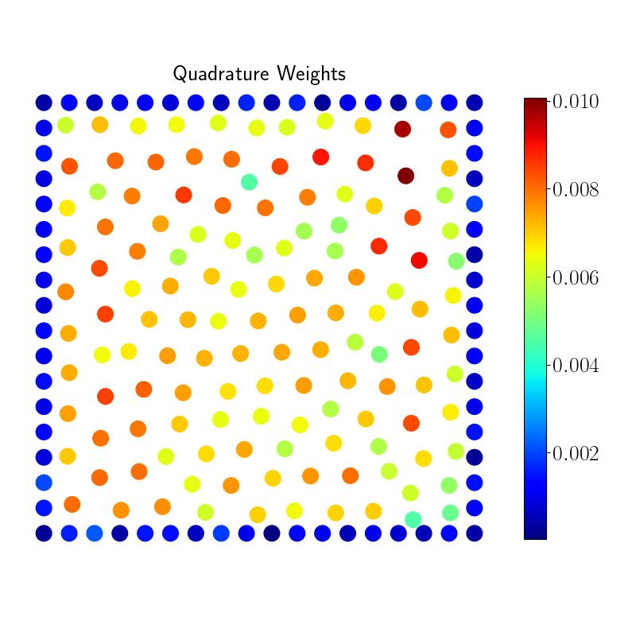

$\newcommand{vecx}{\vec{x}}$
$\newcommand{vecy}{\vec{y}}$


Group Update
Sage Shaw - May 16th, 2024
Kilpatrick Lab
Radial Basis Function Quadrature for Neural Field Equations
Neural Fields
$\partial_t \color{blue}{u}(t, \vecx)_t = -\color{blue}{u} + \int_{\Omega} \color{green}{w}(\vecx, \vecy) \color{red}{f}[\color{blue}{u}(\vecy)] d \vecy$
- $\color{blue}{u}(t, \vecx)$ - Activity
- $\color{green}{w}(\vecx, \vecy)$ - Connectivity kernel
- $\color{red}{f}[\color{blue}{u}]$ - non-linear firingrate function
Numerical Solutions
- Collocation method (rather than Galerkin)
- Use AB5 for time integration
- Use RBF quadrature for integral
RBF Quadrature - just the geometry


Testing manufactured solution
Convergence Plot
Next Steps
- Adapt to surfaces.
- Adapt to arbitrary smooth boundaries.
- Adaptive node placement/refinement.